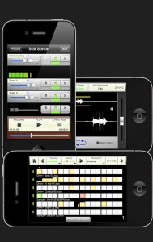
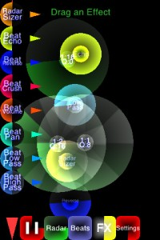

Posted by Mikers On November - 18 - 2011ADD COMMENTS
Positive Grid released the JamUp app, it’s a guitar multi-effect processing app with hybrid amp modeling engine and some amazing jamming and recording features, including phrase sampler, iTunes time stretching jam player, tuner, metronome and user presets. More information: www.positivegrid.com
Posted by dazz26 On February - 16 - 2011ADD COMMENTS
OMGuitar is the best mobile guitar emulation ever created. It is a synthesizer with unique interface and new-generation sound hybrid engine that allows anyone to produce realistic guitar sounds.
OMGuitar is very playable and truly expressive. It responds to the speed of your strumming, catching the emotion of your melody. The quality of the sound is so high that it can easily be used in studio work as a quick method to produce realistic rhythm and arpeggio guitar tracks.
True guitar simulation on the touch-screen device is now possible thanks to the advanced artificial intelligence algorhythm that analyzes your style of playing and alters the sound accordingly.
OMGuitar features a truly mindblowing ergonomic interface. It is supposed to be played with iPad being held in a special way, placed between the laps. This comfortable position lets both hands operate freely, choosing chords and strumming strings. For newbies and keyboardists, it might be easier to define chords with the right hand and strum with the left hand, but it might be the other way for the guitarists.
There is a dedicated string-picking/arpeggio interface, represented as a column of 6 buttons, which can easily be played together with the string strumming interface. Note bend effect is achieved by swiping the button area.
The strings themselves respond to the speed of strumming and the distance between themselves and the initial screen tap. The player is supposed to strum with one finger and place the second finger on the guitar at any time for muting all the strings. With such approach, many common guitar playing techniques can be easily accomplished.
OMGuitar employs an absolutely new way of choosing chords called CH#RD. More than 300 chords are basically at the fingertips. Only one finger is needed to play all the common chords, such as Minor, 7th, Major 7th, power chords, 6th chords, diminished or suspended. For more special chords, one more finger is needed. In total, there is access to 23 chord variations per every root note, which is more than enough for any song.
OMGuitar can remember some of the chords in the 7 assignable “quick-chord” containers at the very top of the chord screen.
Some of the world’s best and most expensive guitar models have been sampled with great precision and act as the source for the synthesis engine. There are 6 completely different playable guitars, 3 acoustic and 3 electric. The tone can be further shaped with the 3-band equalizer.
OMGuitar has 10 built-in effects with over 50 presets: 2 types of Distortion, Reverb, Delay, Chorus, Flanger, Phaser, Wah-wah, Vowel filter, Compressor, Tremolo.
+ The best mobile guitar emulation ever!
+ Expressive playing is now possible
+ Amazing sonic quality, the sound is very impressive
+ Record to .WAV, export to iTunes
+ 6 guitars (3 acoustic, 3 electric)
+ 10 On-board FX with 50 presets
+ Instant access to 300 chords with CH#RD interface
+ 7 assignable containters for “quick chords”
Coming in updates:
+ More FX presets
+ More guitars
+ MIDI record/output
Posted by dazz26 On January - 14 - 2011ADD COMMENTS
Now this makes sense.. The new Studiodock from Alesis
Connect all of your audio gear to the entire world of apps for iPad.
The StudioDock is the first device that enables anyone with an iPad to create, produce, and perform music with virtually any pro audio gear or instruments. The StudioDock is a universal docking station specifically designed for the iPad, and it gives musicians, recording engineers, and music producers the connectivity they need to create and perform with iPad. Connect all your pro audio gear to virtually any app in the App Store with the StudioDock.
FLEXIBLE FUNCTIONALITY
Songwriters, music producers and performers of all kinds will find that the StudioDock connects the iPad’s powerful processor, touch-screen interface and extensive library of apps to their collection of microphones, instruments, professional speaker and PA systems, MIDI controllers, sound modules, video projectors and much more.
With the StudioDock and an iPad, musicians and producers can record, perform, craft and create music in virtually any situation or location. Built to accommodate all current app-development standards including Core MIDI, the StudioDock is a universal device that bridges your choice of music-creation apps, instruments, and devices.
COMPLETE CONNECTIVITY
The StudioDock provides microphone and instrument users with two combination XLR and 1/4-inch inputs, each with its own gain control and switchable phantom power for condenser microphones. Guitarists and bassists will appreciate the StudioDock’s guitar-direct switch, enabling them to play, perform and record right into amplifier- and effects-modeling apps. Bands can connect outputs from their mixer and easily record their performances and rehearsals or use the StudioDock as a metronome or loop-playback device. Producers can use the StudioDock’s MIDI jacks to sequence external keyboards, samplers, drum machines and synthesizers, or perform using the StudioDock as the sound module and their favorite MIDI-compliant keyboard, drum pad or other controller. An assignable 1/4-inch footswitch input enables remote control of any app-defined function such as stop/start or record. Users can also connect the StudioDock to their Mac or PC using the USB port to send MIDI back and forth for creative, new applications of the iPad and computer used in tandem.
Users can connect the StudioDock’s stereo pair of 1/4-inch main outputs to studio monitors for critical listening, or to PA systems for use in performance settings. They can monitor on headphones, and independently control the levels of the two outputs, each on its own knob. Recording musicians will appreciate the StudioDock’s direct-monitor switch, which enables them to toggle between the incoming and playback signal on their headphones. Rounding out the StudioDock’s output section is a composite video connector, enabling users to employ the StudioDock as a source for video projection behind bands on stage, or for connection to most televisions and computer monitors.
RUGGED RELIABILITY
The StudioDock was built for the real world. Whether you’re keeping it in the safety of the studio or taking it out for recording or performance use in the club or on tour, the StudioDock will not only deliver the connectivity you need for audio applications, but it also serves as a rugged, protective case for the iPad. The StudioDock completely houses the iPad on the bottom and three side surfaces. It also encases the iPad’s screen in a protective bezel on three of its four edges, further shielding the mobile computing device from the potential for damage in punishing environments.
The applications of the iPad for music creation, production, and performance are limited only by your creativity. As an imaginative, cutting-edge music maker, the StudioDock empowers you to seamlessly connect the world of pro audio gear and instruments to the iPad and the massive collection of apps.
Posted by dazz26 On January - 14 - 2011ADD COMMENTS
NAMM 2011, the bi-annual music industry trade show has kicked off in Anaheim, California. Amongst the plethora of new music toys, there’s a whole bunch of apps and idevice hardware being released.
Akai have dropped this monster in the ring, the Akai Synthstation 49. Check out the video below which also has a rundown of the Synthstation for ipad app.
Here’s what they have to say.
SynthStation49 is the most advanced, intuitive music controller designed specifically for use with the iPad and the first true iPad performance tool for musicians. Working seamlessly with Akai Professional’s heralded SynthStation software, SynthStation49 provides unparalleled music creation capabilities, including direct in-app MIDI recording from its velocity-sensitive keyboard, nine MPC-style drum pads and array of transport controls. In addition to its integration with the SynthStation app, SynthStation49 is also completely iOS CoreMIDI compatible, making it instantly compatible with dozens of music apps already in the App Store and hundreds more on the way.
Dock, power and position the iPad perfectly using the adjustable-angled cradle, or establish commanding control over your favorite computer software using SynthStation49‘s USB/MIDI port. Professional ¼” outputs and extreme portability ensure you’ll be able to take your sequences straight to the stage at a moments notice.
SynthStation49 is the only full-featured, professional keyboard controller allowing direct MIDI performance recording onto an iPad. Bridging Akai Professional’s popular MPK controllers with the previously released SynthStation25, SynthStation49 provides immense software control with forty-nine, full-size velocity-sensitive keys, nine backlit MPC-style drum pads and full transport buttons. An adjustable-angled dock for iPad allows the user to easily slide their tablet into the SynthStation49’s cradle and position the screen to their preference.
SynthStation49’s keyboard, pitch/modulation wheels and sustain pedal input provide great feel and the essential controls for musicians and producers to compose, record and perform. The nine drum pads of SynthStation49 give users immediate, intuitive beat-creation capabilities over the 50 classic and modern kits available within the SynthStation software. Program, Sequence, Song select and Transport buttons also provide quick navigation to the SynthStation App’s most used components for a seamless, efficient workflow.
SynthStation49 also contains a stereo pair of professional ¼” TRS outputs with volume knob for easy connecting to other pro audio equipment on stage or in the studio. A headphone output also lets users practice and compose in private. The SynthStation49’s USB port can be connected directly to a Mac or PC computer to receive power in addition to transmitting MIDI to and from music software – a great way to turn the SynthStation App or other CoreMIDI compatible App into a sound module. You can even use SynthStation49 as a traditional USB MIDI controller with your computer – no iPad required!
AkaiConnect SDK allows third-party developers to take advantage of all the professional controls and capabilities of Akai Pro’s SynthStation49 keyboard controller and incorporate support for those controls within their iPad applications. Software developers interested in creating programs compatible with SynthStation49 can submit an application now at SynthStationApp.com.
Posted by dazz26 On October - 3 - 2010ADD COMMENTS
Well this one certainly came out of the blue. I’m eating toast and surfing the usual sites, when i stumble on Reactable Mobile.I spat vegemite and crumbs all over the table!
If you haven’t heard of Reactable, I suggest you go and look here. Explaining it will make my brain hurt.
Needless to say it’s a highly desirable piece of kit straight out of science fiction.
And now those clever kids have created a version for iPad, iPhone and iPod Touch.
I’ve only started playing with it, but it looks, feels and sounds amazing.
Posted by dazz26 On September - 24 - 20101 COMMENT
Studiolab pro is a new all in one sample manipulation and sequencing app for iPhone/iPod Touch.
Here’s how developers Krasidy describe it.
Welcome to StudioLab Pro, Krasidy’s answer to mobile musicianship. Inspired by professional drum machines, samplers, and DAW surfaces, this application gives any user the ability to create a wide range of musical works from start to finish. This application combines the functionalities of several Krasidy apps to give you the power to make beats, record vocals, remix and much more.
Krasidy’s recording surface, sampler, and seamless drum machine sequencer capitalize on the modern sample era of music composition. These simple interfaces make StudioLab Pro the perfect tool for mobile music production.
StudioLab Pro Features:
Studio
-volume mixer
-latency detection/compensation (within 1ms)
-audio import/export
-lyrics notepad
-image album cover
-audio bouncing for infinite recording layers
Sequencer (Beat)
-16 to 64 steps (4 Bars)
-latency detection/compensation (within 1ms)
-adjustable tempo (50-200 BPM)
-adjustable Pads for independent volume levels and acute time signatures.
-mono/poly/gate settings
-volume mixer
-audio bouncing for infinite track layers
-wifi import/export
Posted by dazz26 On September - 24 - 2010ADD COMMENTS
RadarBeats has been out for a couple of weeks now and although it took a little time to get used to the interface, it’s proving to be alot of fun.
The interface is along the lines of flourish and Loopseque, where you drop your beats onto a circle which has a play line rotating around like a radar.
To me it’s a great way of building rhythms quickly, and perfectly suited to the iPhone/iPod touch.
I’m sure aversion for iPad is on the way, but for now it’s just for it’s little cousins.
It comes in two flavours, Radarbeats and Radarbeats Pro
The quality of the video isn’t great but it’ll give you and idea of what the app can do.
Thanks for dropping by musictool. Whether you're a dedicated app developer, or devoted app users like us, we hope you find what you're after. Ping us via the Contact Page if you want to touch base.

 Amongst the plethora of new music toys, there’s a whole bunch of apps and idevice hardware being released.
Amongst the plethora of new music toys, there’s a whole bunch of apps and idevice hardware being released.


{kind=link}